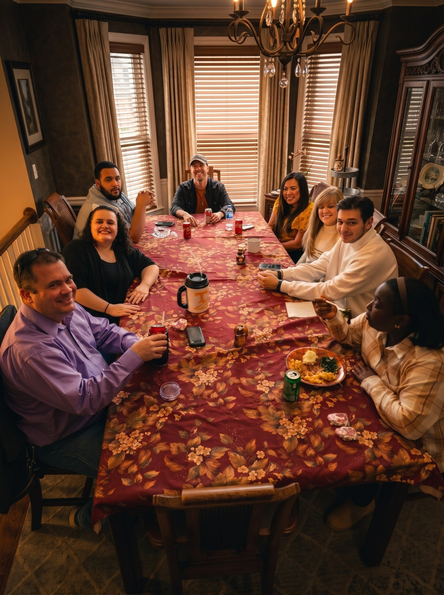
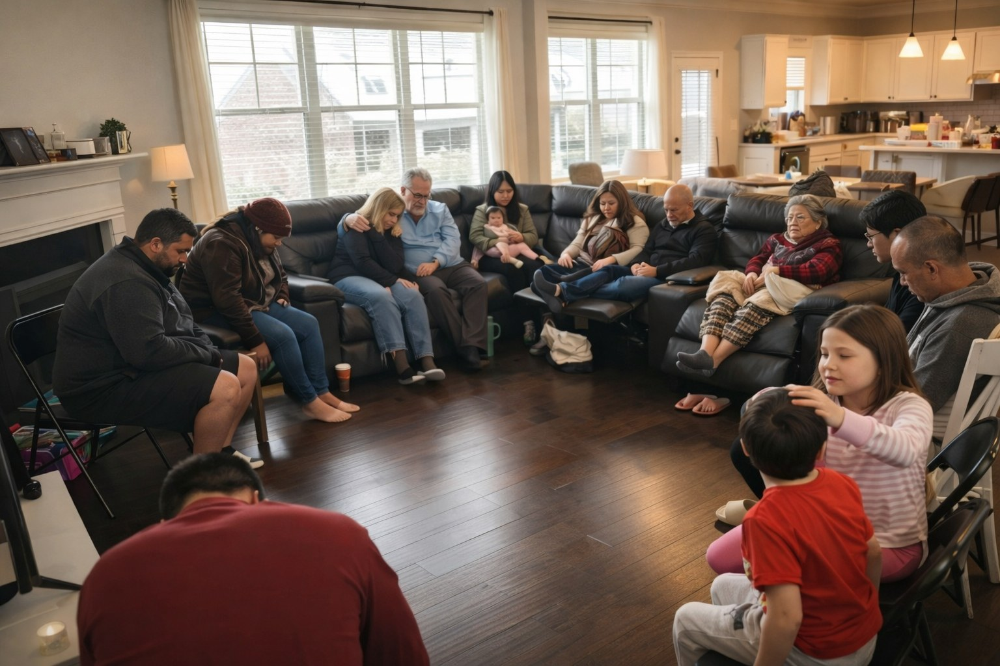
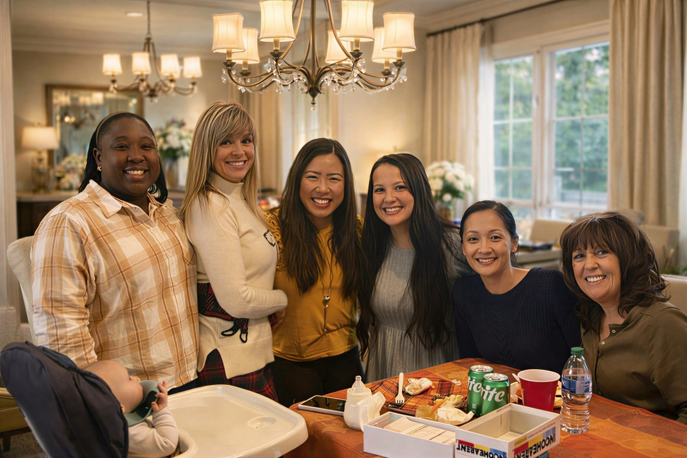
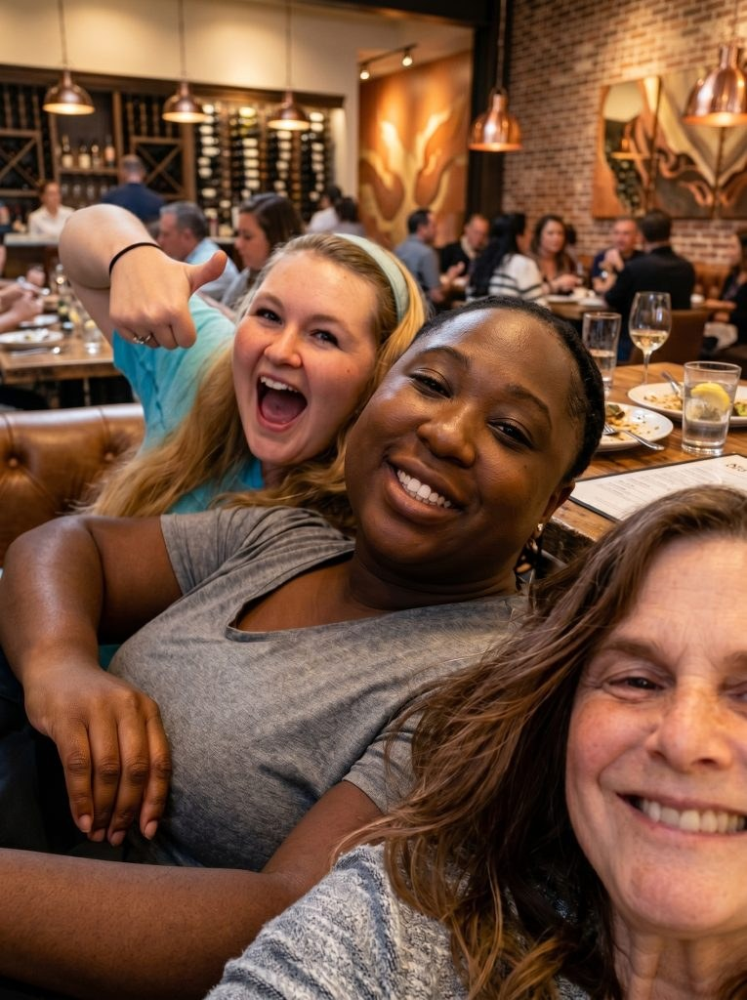
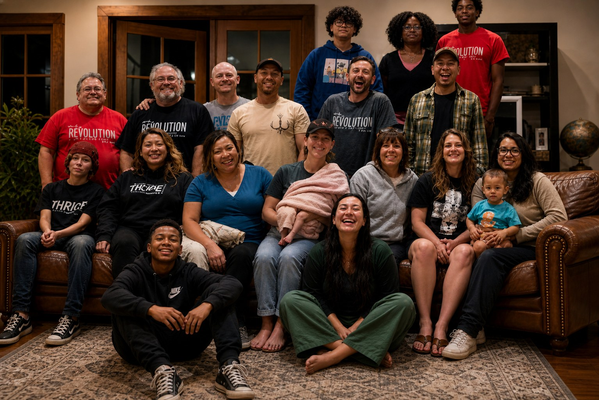
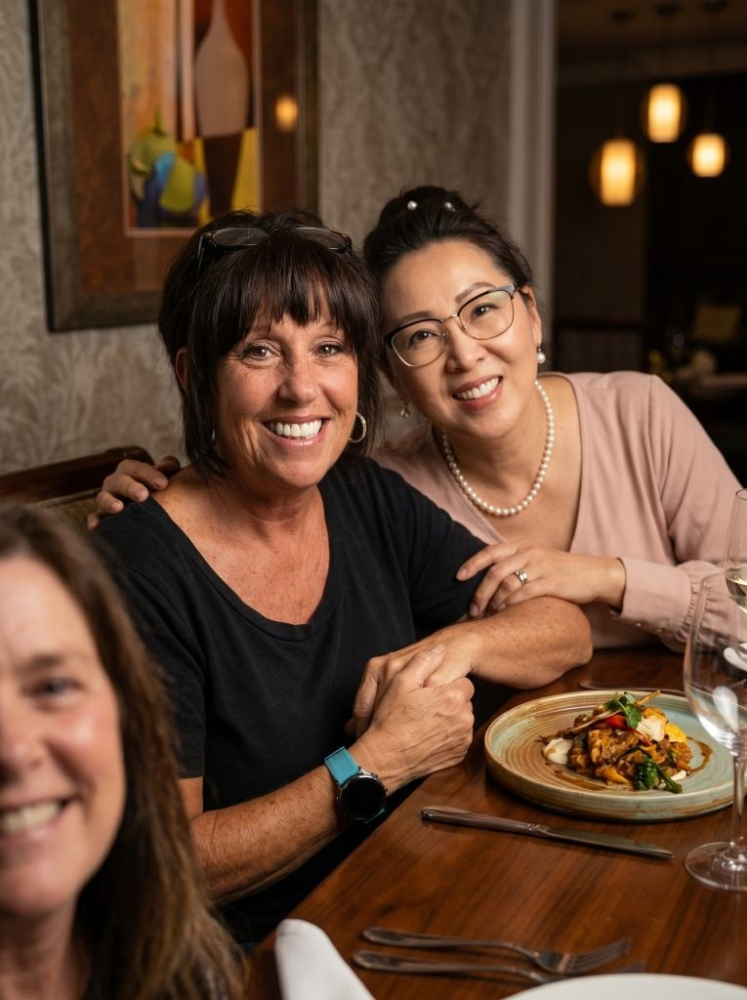
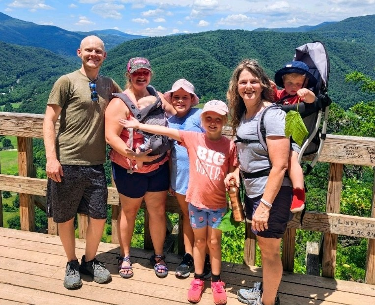
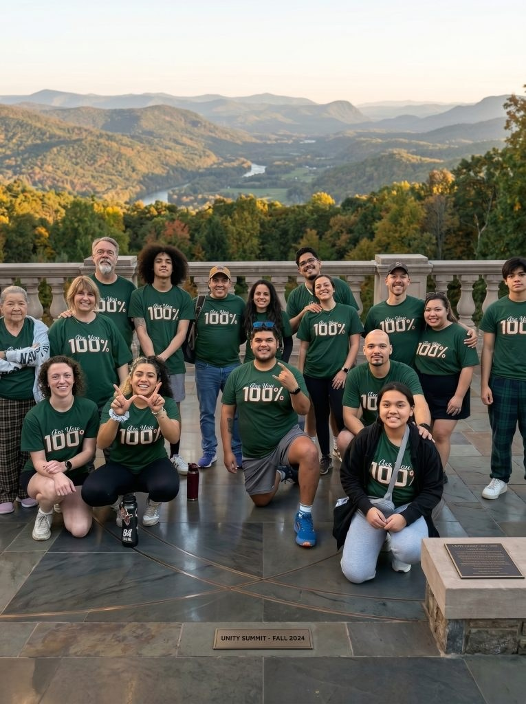

Gwinnett County House Church
Come experience Kingdom family with us.
A simple, Jesus-centered house church family where people share meals, grow together, pray together, and learn to follow Jesus in everyday life.
Real peopleNo performance
Real homesMeals and prayer
Real welcomeCome as you are




First visitNo pressure. No spotlight.
Come meet people, ask questions, and see if this feels like home.
Acts 2:42life together
Not an audience. A family.
People should know they are invited before they read another page.
That is the shift this homepage makes: warmth first, relationship first, clarity first, then deeper teaching after trust is built.

Come as you areYou do not have to know all the answers.
Warm invitation
Come and see.
Many people are tired of disconnected church experiences. What we have found is simple but powerful: people grow deeply when they live life together in authentic community centered around Jesus.
What to expect
A gathering that feels human.
Most visitors are nervous before trying something new. These simple answers reduce fear and make the next step easier.
Shared meals
We often begin around a table because relationship grows through ordinary moments.
Open Scripture
We talk about Jesus, Scripture, and real life in a way people can participate in.
Prayer and care
We slow down enough to pray, listen, encourage, and carry one another.
Kids welcome
Families are not treated like an interruption. Children are part of real community.
What this looks like
Less like an institution. More like family.
We are learning to live as a people connected to Jesus, shaped by love, and committed to walking with one another in everyday life.
FamilyA place to be known and cared for.
BodyEvery person has value and presence.
PrayerWe carry real needs together.
MissionKingdom life in ordinary moments.






Human trust
The feeling people should remember.
Every design choice should help visitors feel known, welcomed, and invited before they decide to reach out.
A visitor impression
“This feels like family.A local believer
A first-time guest
Your next step
You were not created to do life alone.
Come be part of a people learning to live from Jesus together. Reach out, ask questions, or plan a simple first visit.